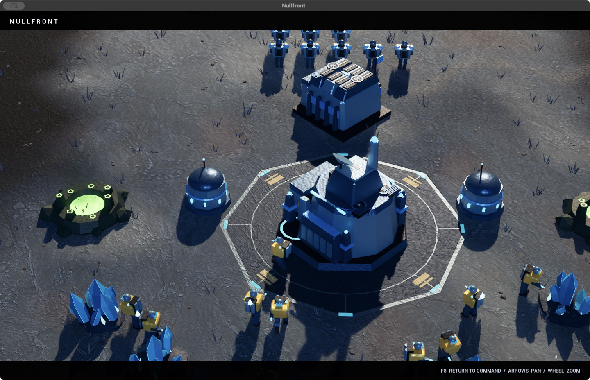

01 / ARMORED INDUSTRY
The Concord
Build a fortified frontline. Deploy siege armor and call down orbital fire.
Steel. Discipline. Firepower.VERSION 0.3.0 / CINEMATIC UPDATE
Three factions. Two hostile worlds.
One army under your command.
An original sci-fi real-time strategy game. Build a base, seize the relay, and lead your forces into single-player battles against AI.
Apple Silicon · macOS 14+ · Native desktop game
Early build. See installation notes before opening.

03ORIGINAL FACTIONS
02BATTLEFIELDS
01COMMANDER. YOU.
SINGLE PLAYER AI SKIRMISH
01 / CHOOSE YOUR DOCTRINE
Industry. Instinct. Light.
Every faction brings its own units, structures, hero, and way of waging war.
01 / ARMORED INDUSTRY
Build a fortified frontline. Deploy siege armor and call down orbital fire.
Steel. Discipline. Firepower.02 / THE LIVING SWARM
Spread mycelium across the map. Regenerate, multiply, and overwhelm.
Grow. Adapt. Consume.03 / HARD-LIGHT ANCIENTS
Shape a luminous empire. Fight with regenerating shields and psionic abilities.
Precision. Power. Light.Illustrated faction portraits. The screenshot above shows actual gameplay.
02 / THE ART OF COMMAND
Familiar RTS foundations, an original universe, and a faster route to your first offensive.
Rapid Deployment starts you with workers, a ready base, and a mixed strike force. Choose Classic Build-up for a headquarters-and-workers opening.
Hold the central relay with ground troops to earn bonus resources. Control the economy, reinforce your army, and destroy the enemy's structures to win.
Take the high ground on Ashfall Mesa or navigate frozen chasms and the ice bridge on Frostglass Rift. Choose your AI opponent and difficulty before deploying.
Press F8 for a cinematic lens and a clean view of the battlefield. Pan and zoom freely, or watch two AI armies fight while the camera follows the action.
Textured rock, sculpted faction details, atmospheric lighting, and layered combat effects—from the first muzzle flash to the last ember.
03 / YOUR NEXT COMMAND
Download NULLFRONT: Frontier Wars for Mac.
Download v0.3.0 Release notes & downloadsf06a41d13976442a5e850b294d862d0f1ffa835c1b2926c097c06e85f0441853This is a native Mac application. It does not run in your browser.